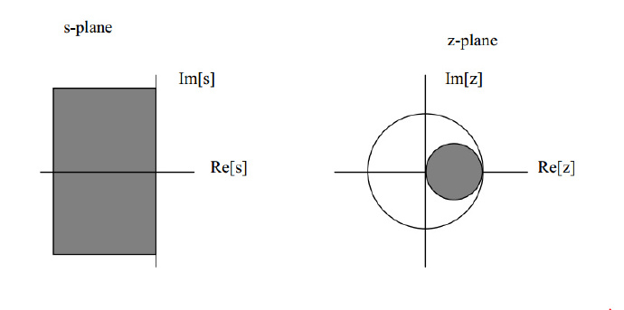
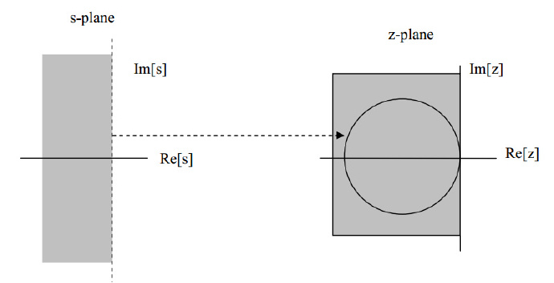
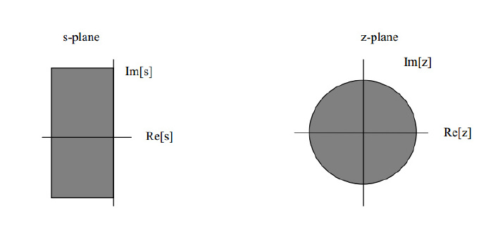

Discretization method(离散化方法)
离散化方法的笔记
最近看论文中发现，分析系统的稳定性问题总免不了在s域先分析一下，然后再在z域上分析一下。可是很多论文对于离散化方法却略去不提，直接给出推导出的结果。所以笔者就寻找总结了一下各种离散化方法，总结一下。学通信或者测量的同学，专门学过数字信号处理的话，应该很熟悉的。
1. 后向差分
后向差分的映射关系为：
$$ s \leftarrow \frac{z-1}{Tz} $$
从s平面到z平面上来看的话，这实际上是将s平面的左半平面映射到z平面的以(0.5,0)为圆心，半径为0.5的圆中。所以原来稳定的系统，经过后向差分之后，一定是稳定的，因为该圆在单位圆内；而原来不稳定的系统，有可能被映射到单位圆中，即可能存在原来不稳定的系统经过后向差分离散化之后，是稳定的。
参考文献中有s平面映射到z平面的图，方便理解，有需要的同学可以查看。

2. 前向差分
前向差分的映射关系为：
$$ s \leftarrow \frac{z-1}{T} $$
从s平面到z平面上来看，其实是将左半平面映射到了z平面上直线 $z=1$ 的左边平面上。所以原来在s域上稳定的系统经过前向差分之后的离散系统可能是不稳定的。

3. Tustin Method(双线性变换方法：Bilinear Transform)
双线性变换方法的映射关系为：
$$ s \leftarrow \frac{2}{T}\frac{z-1}{z+1} $$
双线性变换方法其实是比较常用的离散化方法啦，毕竟这种方法能够保持映射前后的稳定性是一致的。因为从s平面到z平面的映射来看，该映射将s平面的左半平面映射到z平面的单位圆内。

4. Tustin Method with pre-warping
双线性变换方法虽然好，但是也有其本身的问题：频偏效应。s域的传递函数的频率和离散化数字传递函数的频率的对应映射关系是非线性的。这种效应可以通过带pre-warping的Tustin方法缓解。频率的对应映射关系为
$$ w_{a} = \frac{2}{T}tan{(w_{d}\frac{T}{2})} $$
根据这个频率映射关系，我们就可以针对特定的频率范围附近，也就是我们感兴趣的频率范围附近，将数字滤波器的幅频特性与模拟滤波器的幅频特性相匹配。
5.零极点匹配法
s域的传递函数为：
$$ H(s)=\frac{\prod_{k=1}^{M}(s-z_{k})}{\prod_{k=1}^{N}(s-p_{k})} $$
那么根据零极点匹配得原则，离散化形式如下：
$$ H(z)=\frac{\prod_{k=1}^{M}(1-e^{z_{k}T}z^{-1})}{\prod_{k=1}^{N}(1-e^{p_{k}T}z^{-1})} $$
这种方法存在一定的假设前提，同时还有对于离散化得到的数字滤波器加入一个为0的零点来得到一个minimum delay filter这样的技巧，详情可以参见参考。
6. 其他方法
除了上述方法之外呢，还有一些其他方法，例如：
除了上述方法之外呢，还有一些其他方法，例如：
- 冲激响应不变法
- 阶跃响应不变法（ZOH法，零阶保持器法）
- 斜坡响应不变法（一阶保持器法）
- 幅频响应不变法
- 相频响应不变法
这些方法都有其特性或有点，在不同的场合下应该有不同的应用。笔者暂时用不到，就暂且不表了。
参考
- 原文作者：Hao Dong
- 原文链接：https://haodongnj.github.io/haodongnj/post/descretization-method/
- 版权声明：本作品采用知识共享署名-非商业性使用-禁止演绎 4.0 国际许可协议进行许可，非商业转载请注明出处（作者，原文链接），商业转载请联系作者获得授权。